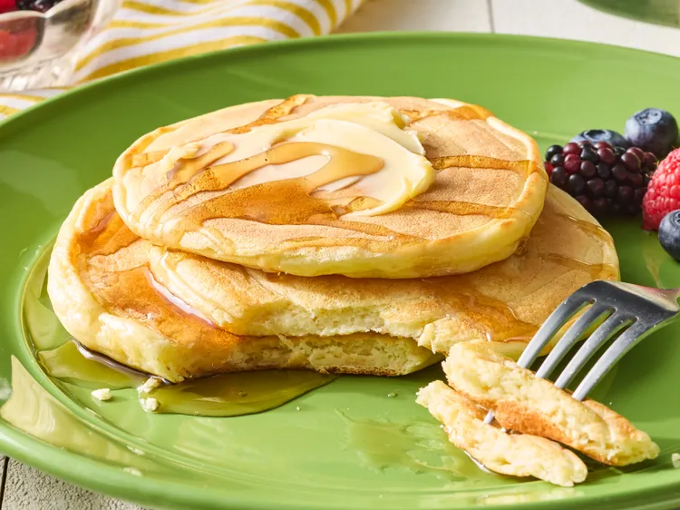

Easy Pancakes

Description
These 3-ingredient pancakes are so tasty! They're light and fluffy and super easy to make - my new favorite way to make simple and quick pancakes.
Ingredients
- 1/2 tablespoon butter
- 1 hot dog, cut into 1/2-inch slices
- 1 large egg
- 1/4 teaspoon kosher salt
- 1/8 teaspoon freshly ground black pepper
Steps
- Melt butter in a small nonstick skillet over medium heat. Add hot dogs and cook until browned on all sides, about 2 minutes. Turn heat to down to medium-low.
- Whisk eggs with salt and pepper until well blended and pour over hot dogs. Cook, stirring constantly until eggs are set. Serve immediately.